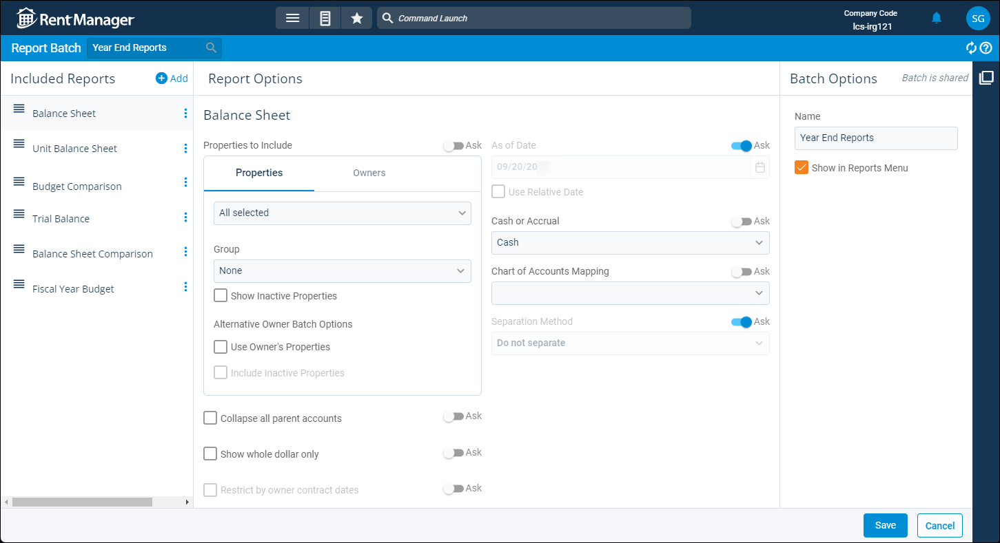

Source: https://rmxhelp.rentmanager.com/Topics/Express/CSH/Report-Batch-Details.htm
Report Batch Details (Page)
Report batches are collections of reports that can be generated simultaneously to save time and increase efficiency. You can configure the report options of each report in the batch to generate the reports automatically with little to no input from the user. Report batches can also be scheduled to generate at a certain time and date, and the reports are then emailed to the specified email address(es).
The report batch's details page allows you to manage the reports included in the batch and their report option settings.
Related Privileges
| Group | Privilege | Column |
|---|---|---|
| Letter/Email Templates/Reports/Packets | Run reports | Enabled |
Additionally, on the user's Reports tab, they must have access to each report in the batch.
For more information, refer to Control User Access.
To manage the details of a report batch, go to  arrow_forward
arrow_forward  Manage Batches and select a batch from the list.
Manage Batches and select a batch from the list.

More Information
Report batches can be modified only by the owner of the report batch. By default, the owner is the user who created the report batch. To change the owner of a report, on the action bar to the right click  arrow_forward Change Ownership.
arrow_forward Change Ownership.
Included Reports
This section displays the list of all reports included in the report batch. To add a report to the batch, click  Add.
Add.
For each report, the following row actions are available from the  menu:
menu:
| Option | Description |
|---|---|
|
Run Report |
Generate the individual report. Running an individual report takes you to the report options page for that report and does not use the report options established in the batch. |
|
Remove Report |
Remove the individual report from the report batch. |
Report Options
You can edit the preset report options for each report in the batch. This means that when you run the report batch, you do not have to manually input the desired report options for each report. Rent Manager automatically uses the report options you configured in the batch and the report output generates based on those settings. The available report options are dependent on the report selected.
To have Rent Manager prompt you to input a value for a report option each time you generate the report, toggle the Ask button at the top of the report option. If the Ask toggle is enabled for any report options on any report in the batch, the report batch cannot be scheduled to run automatically.
Batch Options
This section includes basic settings for the report batch, and displays whether or not the batch is shared with other users, or shared to you by another user. The following fields are available in the Batch Options section:
| Field | Description |
|---|---|
|
Name |
The unique name of the report batch. |
|
Show in Reports Menu |
If checked, this report batch can be accessed from main reports menu at |